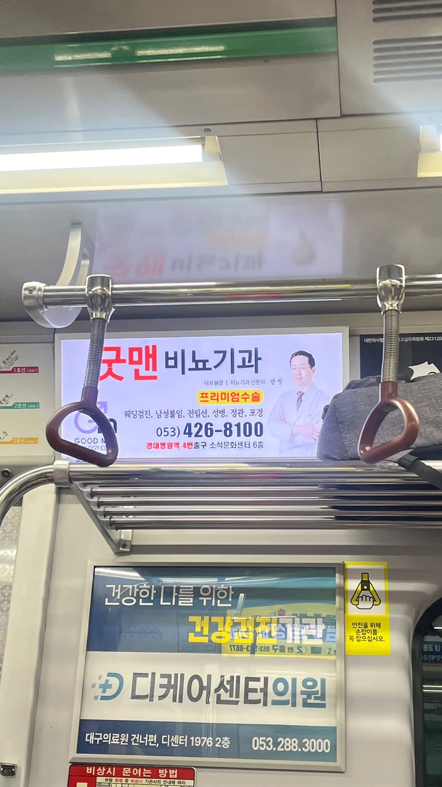

1
여성병원 광고이다. 여자 의사선생님 3명이 있다. 여성병원이라고 다 의사들이 여자인 것은 아니다. 남자 의사도 있다. 하지만 여성 의사들로 구성한 것은 고정 관념이라고 생각한다.
2
 가운을 입고 단정한 모습의 남자 의사가 환자에게 주사를 놓는다. 성 역할에 관한 직업의 고정 관념이라고 생각한다.
가운을 입고 단정한 모습의 남자 의사가 환자에게 주사를 놓는다. 성 역할에 관한 직업의 고정 관념이라고 생각한다.
3
외국인이 즐겁게 어깨동무하고 있는 모습이다. 왜 한국인 모델을 쓰지 않았을까 생각이 들었다. 외국인들이 한국인들보다 비교적 신체가 발달되어있다. 하지만 한국인 모델도 충분히 가능하다고 생각한다. 더 건강해 보이는 서양의 미 표준에 맞추는 듯 했다.
4
 경찰서 앞에 붙어 있던 광고이다. 배트맨은 슈퍼 히어로와 영웅의 대명사와도 같은 캐릭터이다. 시민들을 지켜줄 수 있는 이미지와 더불어 경찰관이 아닌 배트맨이 있는 것이 형식적인 이미지가 아니라서 색달랐다.
경찰서 앞에 붙어 있던 광고이다. 배트맨은 슈퍼 히어로와 영웅의 대명사와도 같은 캐릭터이다. 시민들을 지켜줄 수 있는 이미지와 더불어 경찰관이 아닌 배트맨이 있는 것이 형식적인 이미지가 아니라서 색달랐다.
5
도움이 필요한 아이에게 기부해달라는 광고이다. 광고의 취 지에 맞게 병원에서 위독한 아이의 모습이 동정심을 유발한다.
6
 나이 드신 분이 치아가 보이게 웃고 있다. 치아가 곧게 잘 보인다. 또한 편안해 보이는 미소 때문에 치아가 더욱 돋보인다.
나이 드신 분이 치아가 보이게 웃고 있다. 치아가 곧게 잘 보인다. 또한 편안해 보이는 미소 때문에 치아가 더욱 돋보인다.
7
안경 낀 의사가 팔을 꼰 자세로 있다. 안경 하나만으로도 똑부러진 느낌을 준다. 광고에 남자 의사를 쓴 것은 보편적이라고 생각한다.
8
경찰의 남녀 비율이 남자가 많다. 그래서 그런지 남자분들만 있다. 일반화는 문제가 되지만 듬직한 이미지의 남성들로 안정감이 들긴 한다.
9
 모델답게 옷을 걸쳐도 말라보이는 게 티가 난다. 사진 속 모델의 모습이 우울해보인다. 미의 기준에 맞추려고 애쓰는 느낌이 났다.
모델답게 옷을 걸쳐도 말라보이는 게 티가 난다. 사진 속 모델의 모습이 우울해보인다. 미의 기준에 맞추려고 애쓰는 느낌이 났다.
10
초보운전 옆에 있는 그림이 한눈에 알아보기 편하다. 초보운전의 글자를 더욱 돋보여준다.